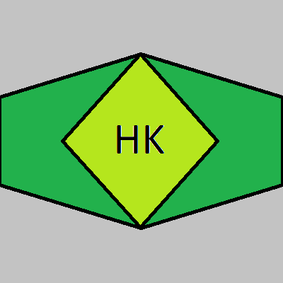

The SSC Tuatara is a sports car designed, developed and manufactured by American automobile manufacturer SSC North America. The car is the successor to the Ultimate Aero and is the result of a design collaboration between Jason Castriota and SSC. Initially powered by a 6.9-liter twin-turbocharged V8 engine, the capacity of the engine was later reduced to 5.9 liters in order to allow the engine to have a higher redline of 8,800 rpm. SSC had stated that the power output would be rated at 1,350 hp (1,007 kW; 1,369 PS) or 1,750 hp (1,305 kW; 1,774 PS) on E85 fuel, along with a 300+ mph top speed.

The Bugatti Chiron is a mid-engine two-seater sports car designed and developed in Germany by Bugatti Engineering GmbH and manufactured in Molsheim, France by French automobile manufacturer Bugatti Automobiles S.A.S. The successor to the Bugatti Veyron, the Chiron was first shown at the Geneva Motor Show on 1 March 2016. The car is based on the Bugatti Vision Gran Turismo concept car. The car is named after the Monegasque driver Louis Chiron. The car shares the name with the 1999 Bugatti 18/3 Chiron concept car.

The Koenigsegg Jesko is a limited production mid-engine sports car produced by Swedish automobile manufacturer Koenigsegg. Introduced at the 2019 Geneva Motor Show, the car succeeds the Agera. The name Jesko is a tribute to the company founder's father, Jesko von Koenigsegg. The automobile is named after Jesko von Koenigsegg, the father of Christian von Koenigsegg. The Jesko is primarily built as a high-performance track car, with focus on high aerodynamic downforce and more precise handling. Koenigsegg's other current production model, the Regera, is designed as a grand touring-oriented offering.
|  |
|---|